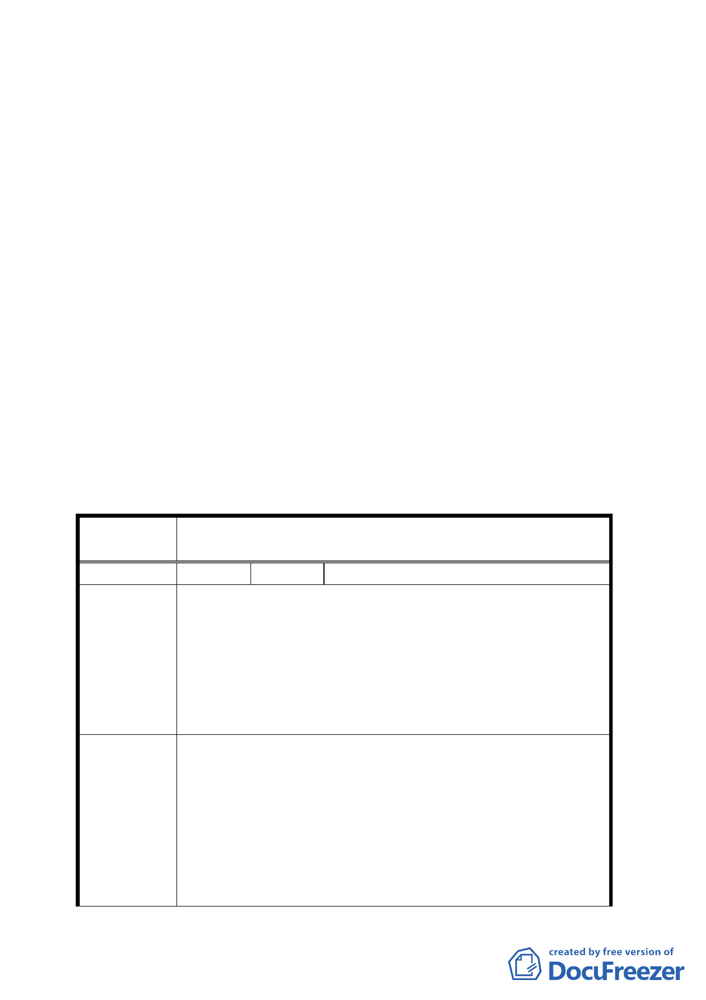

附件2
三、本案係市府 96 年 11 月 12 日以府都規字第 09635237803 號
函送到會。
四、申請單位及辦理單位：臺北市政府。
五、法令依據：
都市計畫法第 27 條第 1 項第 4 款。都市更新條例第 6 條第 1
項第 1、2、6 款，第 7 條第 1 項第 3 款。
決議：
一、本案有關適用開發期程獎勵之附帶規定第 1 點：「更新單元應
以 1 個完整街廓（含）以上為原則」，增列「但因計畫街廓過
大或其他特殊因素確難一次辦理者，得經本市都市更新審議委
員會審議通過後，不在此限」等文字，其餘計畫書文字及圖面
依市府本次會議所送計畫書修訂本修正通過。
二、公民或團體陳情意見決議情形如後附綜理表。
臺北市都市計畫委員會 公民或團體陳情意見綜理表
案名
編號
陳情理由
建議辦法
變更臺北市遷建住宅基地都市計畫暨劃定都市更新地
區計畫案
1 陳情人 鄭貽基
1.五指山是地震中心，透天厝比大樓安全，東興大樓就
是例子。
2.單位人口密度已是世界第 3，生育率世界最低，房子
不需往高樓發展。
3.缺少人文思想，以為高容積率就是高品質跟美，安全
最重要。
4.家裡有先人足跡、兒時回憶，不忍重建。
1.請到巴黎、義大利、上海石庫門、北京胡同、九份老
街考察。
2.請朝向建立社區文化努力，例如五分埔批發中心，要
向日本商店街再學習，台北圓環就是失敗例子。
3.建立新城與舊城，擴大捷運交通網，分散人口密度。
4.以社區自然發展為主，政府輔導為輔。別用法令強制，
必招民怨。
5.本戶不願介入此計畫案。
8